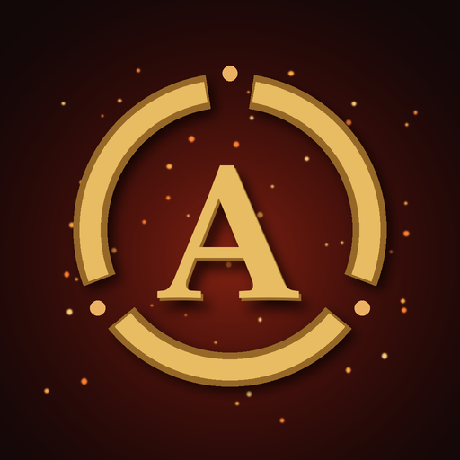
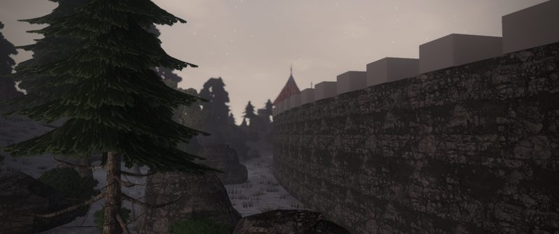
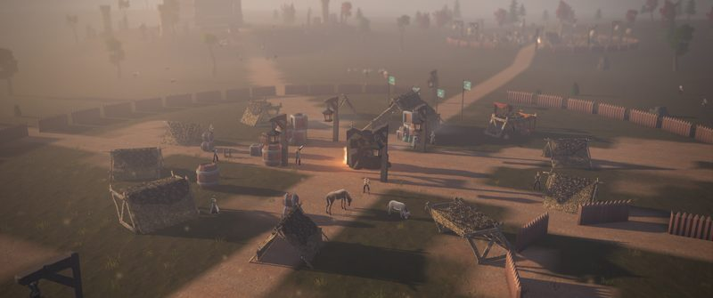
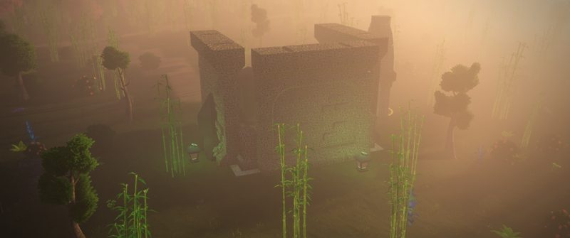

ARDHALENKayıp Krallığın Yankıları
Başlatıcı oyunu kurar ve yeni sürüm çıktığında tek tıkla günceller.
Bir zamanlar dünya büyüklerindi. Dört halk dört armağanı tek bir antla birleştirdi; büyükler uyudu ve Ardhalen doğdu. Sonra bir baba, ölmek üzere olan kızını kurtarmak için mührü kendi elinden çıkarıp onun parmağına taktı. Ant iki ele birden verildiğini anladı ve yer yarıldı.
Dört yüz yıl sonra kıta üçe bölünmüş, aralarına Gözyaşı Denizi dolmuş. Sen o yankının içinde doğdun.

Karlı fiyortlar, uzun evler, rün taşları.

Bozkır, otağlar, kurganlar; rüzgâr ve at.

Bambu ormanları, tapınaklar, sisli tarlalar.
Yükleniyor…
| En az | Önerilen | |
|---|---|---|
| Sistem | Windows 10 64 bit | Windows 10/11 64 bit |
| Ekran kartı | OpenGL 3.3 (Uyumlu Mod) | Vulkan destekli, 2 GB |
| Bellek | 4 GB | 8 GB |
| Disk | 2 GB | 2 GB (SSD) |
Windows ilk açılışta "bilinmeyen yayıncı" uyarısı gösterebilir: "Ek bilgi → Yine de çalıştır".